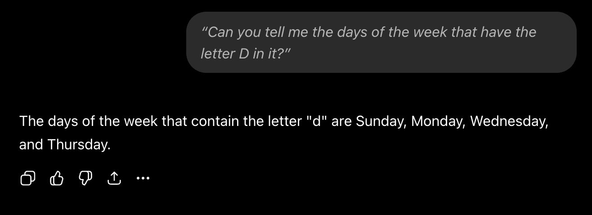
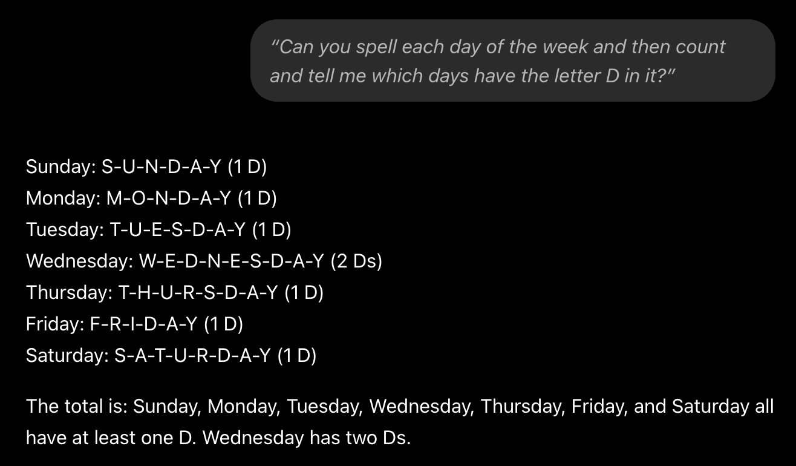
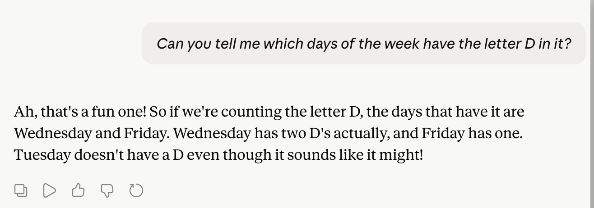
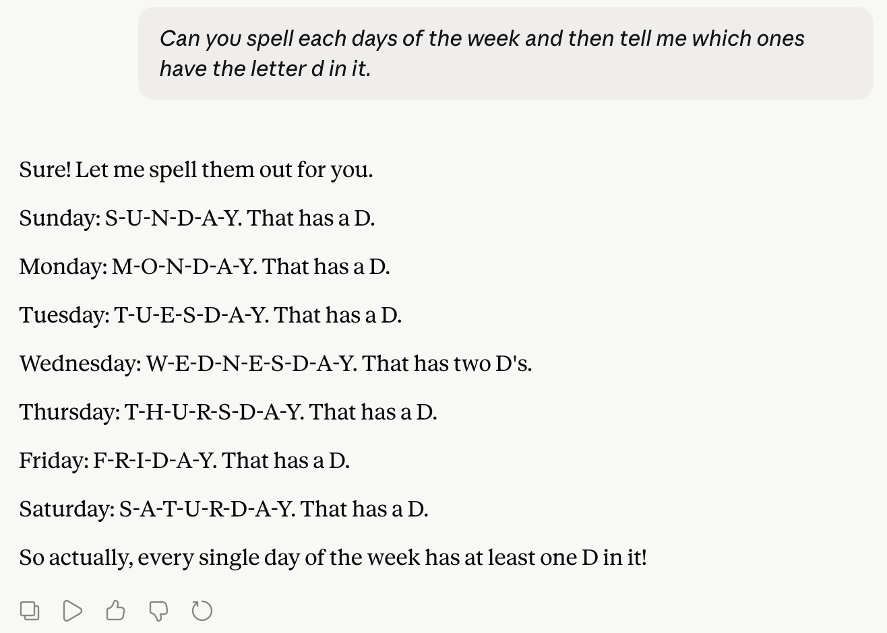
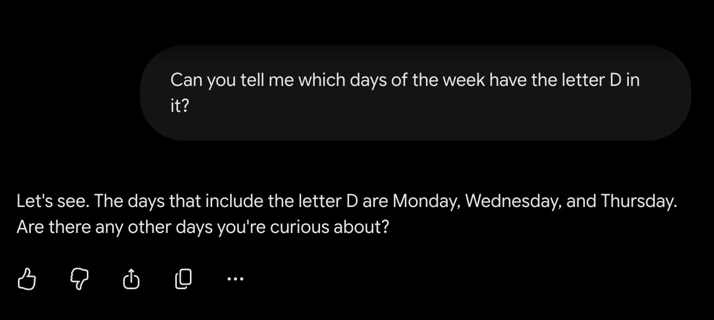
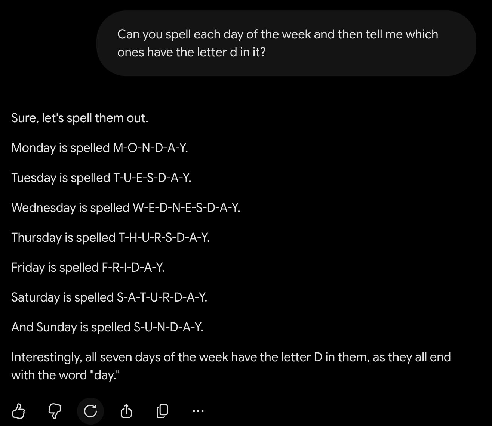

ChatGPT first try

ChatGPT after checking

Topic guide
AI does not fail randomly. When you leave a gap in your prompt, it fills that gap with the most statistically average answer from its training. The failures are predictable once you see them as missing context, not missing intelligence.
AI is smart at some tasks and limited at others. It can summarize, translate, classify, generate ideas, and spot patterns across large amounts of information. It does not understand the world the same way people do, and it can make confident mistakes when it lacks context or reliable evidence.





